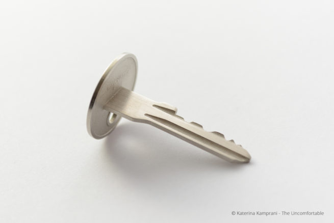
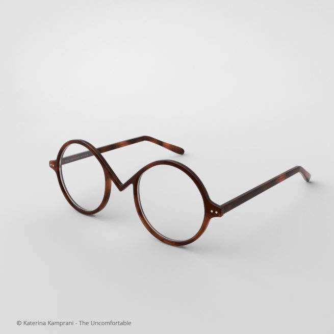
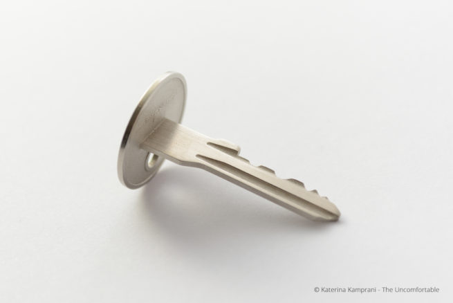
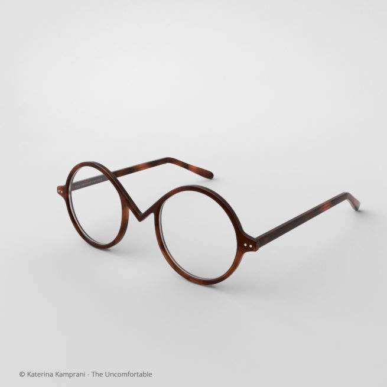
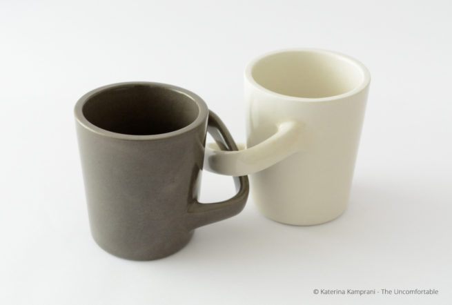
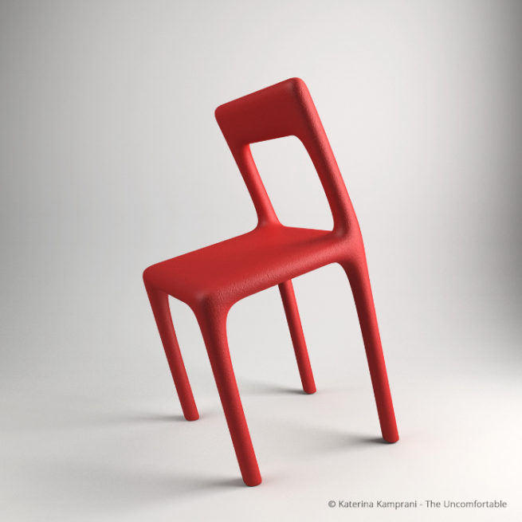
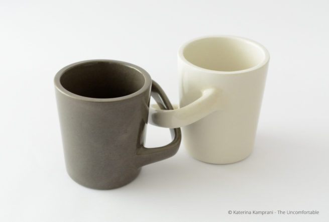
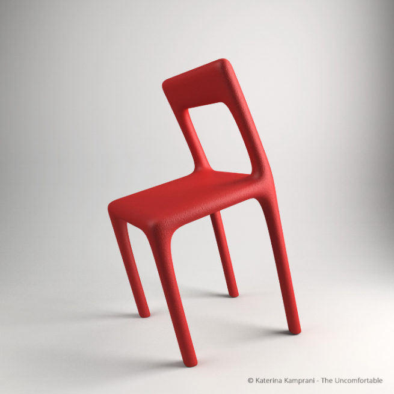

The uncomfortable
The Uncomfortable es una serie de objetos domésticos poco prácticos de la arquitecta radicada en Atenas, Katerina Kamprani. Cada objeto es creado a partir del mismo material con el que sería construido de forma normal, haciendo que las copas de vino siamesas o las tazas de desayuno entrelazadas sean más divertidas. Habitualmente, antes de crear el objeto físico, Kamprani crea un modelo 3D para probar su forma. La diseñadora logra inutilizar con toques de humor y estilo objetos tan cotidianos como una silla, una regadera.
 


